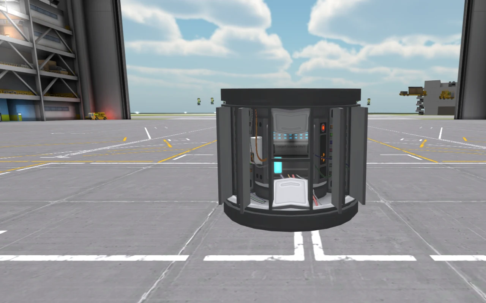
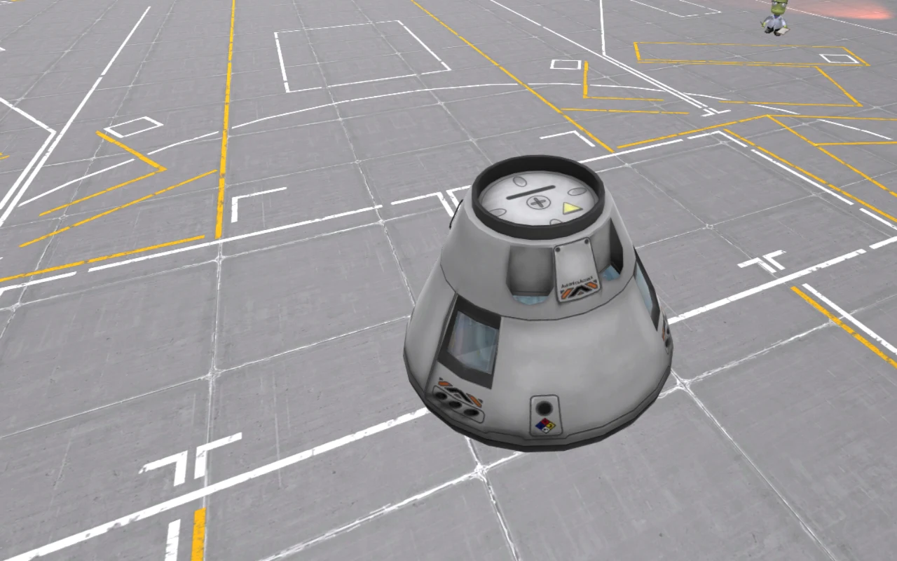
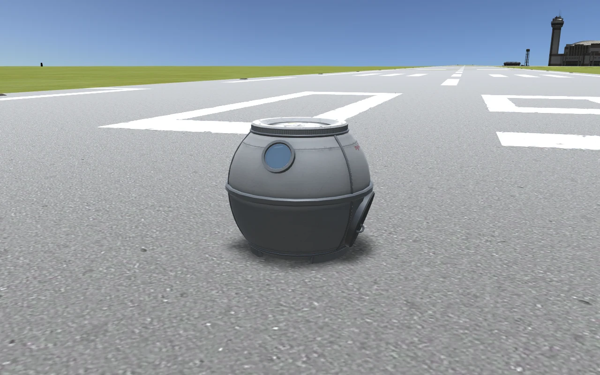

← Back to supported mods
Parts
Mk2 Crewed Lab MPL-MK2-2
Mobile Processing Lab MPL-CC-2
Mobile Processing Lab MPL-FS2-2
Mobile Processing Lab MPL-MK-1-CC-1


Mobile Processing Lab MPL-MK1-2-2


Mobile Processing Lab MPL-MK2-LC-2
Mobile Processing Lab MPL-ON-2

